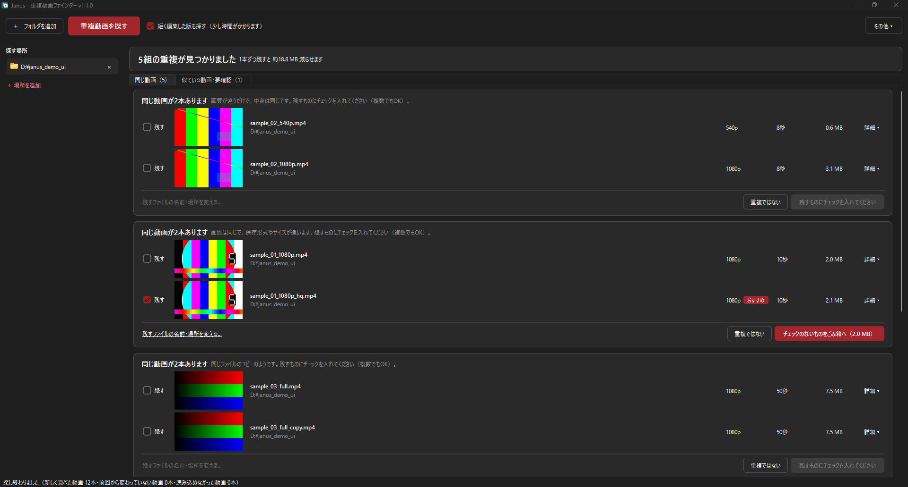
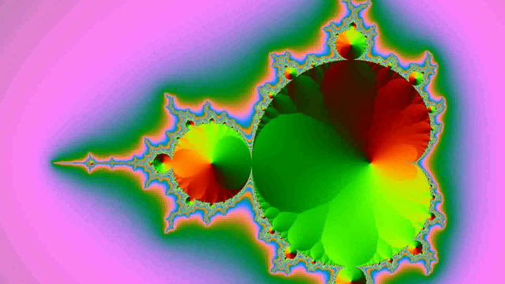
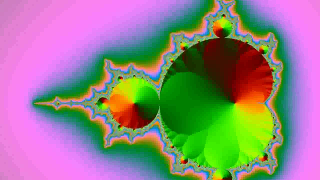

PRODUCT 01 / WINDOWS APP
Janus
重複動画ファインダー
長さや解像度が違っても、
内容で見抜く。
ローカルに保存した動画の中から、中身が同じものを見つけて整理するWindows向けアプリ。解析はすべてPC内で完結します。
¥980（税込）/無料体験版あり/Windows 11 64bit
無料体験版は Microsoft Store 版のみ。ごみ箱への移動は合計10件まで、解析・確認機能は製品版と同じです。

01
中身で比べる
ファイル名やハッシュが違っても、解像度・ビットレート・形式が違っても、映像の内容から同じ動画を判定します。
02
切り抜き版も拾う
フル尺の動画と、そこから切り出したダイジェスト・短縮版の組み合わせも候補として検出します。現在のバージョンは数分程度の短い動画向けで、30分以上の動画では見つからないことが多いです。
03
通信しない
インターネット通信は一切行いません。解析も整理も、すべてお使いのPCの中で完結します。


SAME CONTENT
ABOUT JANUS
二つの顔を見比べて、
同じものを見つける。
Janus は、PCに保存された動画ファイルから内容が重複している動画を見つけ出し、整理するためのデスクトップアプリです。グループごとに残すファイルを選び、不要なものだけをごみ箱へ移動できます。
整理のための機能
- 残すファイルを選んで、不要なものだけごみ箱へ
- 削除と同時に、残すファイルの名前変更・フォルダ移動
- 重複扱いしたくない組み合わせは次から表示しない（いつでも戻せます）
- いつ・何を・どう処理したかを整理した記録で確認
こんな方に
- ダウンロードや録画を繰り返して、動画フォルダが肥大化した
- 同じ動画を解像度違いで何本も保存してしまっている
- 容量を空けたいが、どれを消していいか判断に時間がかかる
PCでテレビ番組を録画している方は、録画したテレビ番組の重複を整理する方法（TSとMP4の二重保存）もご覧ください。
SPECIFICATIONS
動作環境・価格
- 対応OS
- Windows 11（64bit版）
- 価格
- 980円（税込）
- 無料体験版
- Microsoft Store 版のみ（ごみ箱への移動は合計10件まで）
- 配布元
- Microsoft Store ／ BOOTH
- 通信
- 行いません（プライバシーポリシー）
※ Microsoft Store 版と BOOTH 版は同じ製品ですが、別々の販売のため、一方の購入はもう一方には引き継がれません。